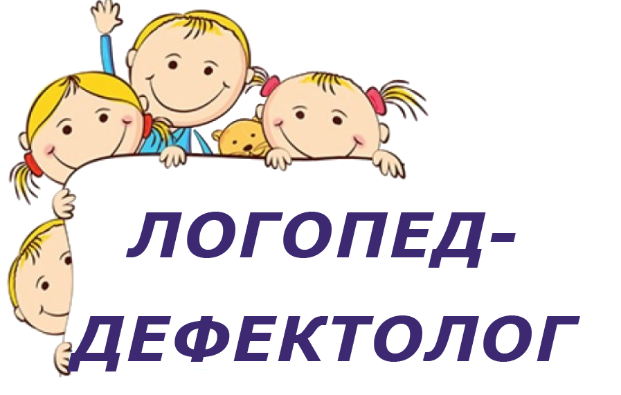

г. Пенза, ул.Чапаева 85, кв. 100
 8 (927) 288-04-77
8 (927) 288-04-77
mail: shirokova.djulia2016@yandex.ru
8 (927) 288-04-77
mail: shirokova.djulia2016@yandex.ru
Закончила в 2008 году Мордовский педагогический государственный институт им. Евсевьева М.Е. по специальности "Олигофренопедагогика" с дополнительной специальностью "Логопедия".
С 2000 года работала в социальном реабилитационном центре "Мечта" в отделении детей с ограниченными возможностями в г. Никольске, в должности логопеда. С 2015 года продолжает свою деятельность в должности дефектолога областного реабилитационного центра для детей и подростков г.Пензы. Всю свою 17-летнею педагогическую деятельность посвятила работе с детьми с особыми нуждами.
При своей работе использует собственные методики, а также фундаментальные разработки дефектологов. Большое внимание уделяет развитию и обучению детей с с. Дауна, детей с РДА. Разработана программа "Речевое развитие детей с с. Дауна через логоритмические упражнения", "Альтернативная коммуникация с детьми с нарушеным развитием. Большой опыт работы с детьми с РДА, ЗПР.
Адрес: г. Пенза, ул.Чапаева 85, кв. 100 (подъезд 2, этаж 5)
Телнфон: 8 (927) 288-04-77
mail: shirokova.djulia2016@yandex.ru